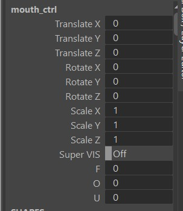
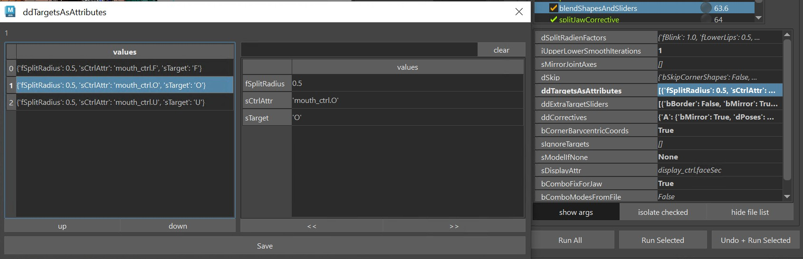
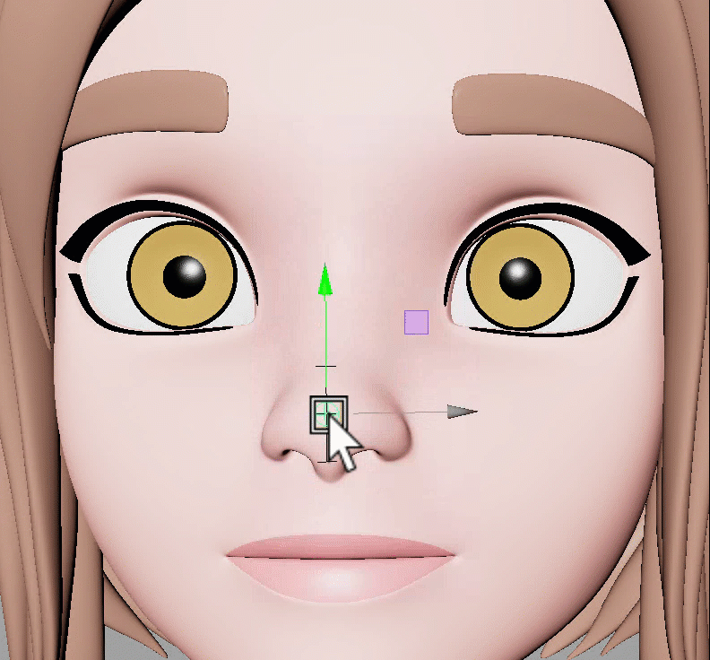
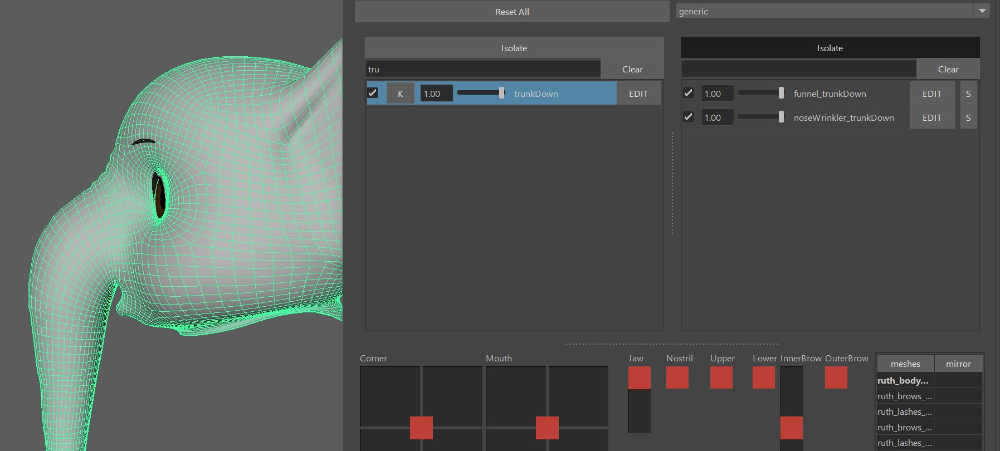
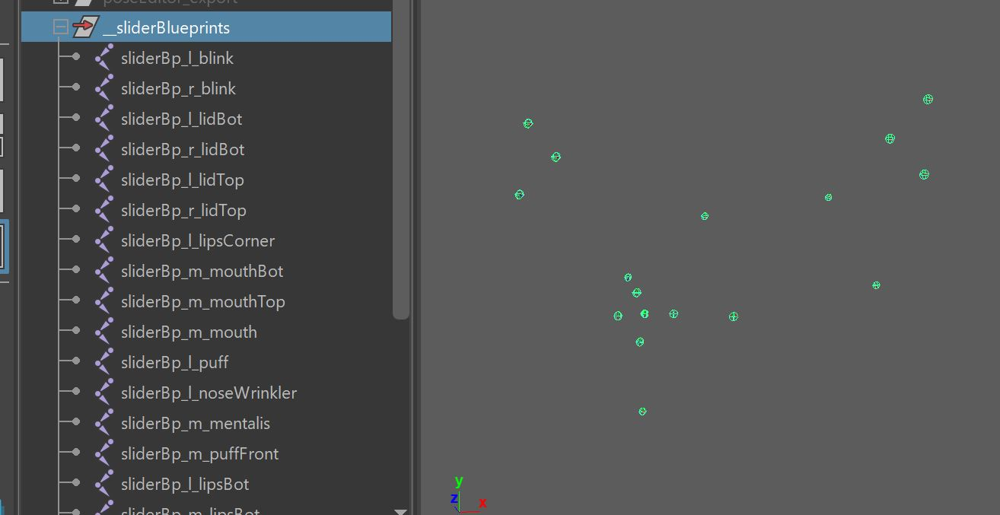
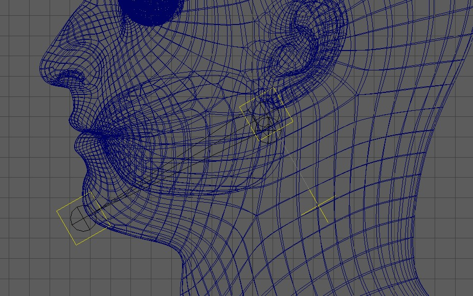
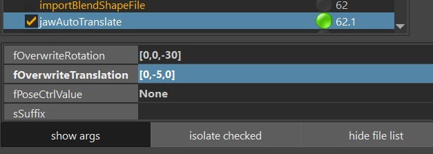

General
Face Rigging in Kangaroo has gotten very powerful in version 5. It's got many different setups to choose from for each part - mouth, brows, eyelids, etc and it's got some general squash/stretch ctrls.
Most of the time you have the option of doing spline setups or blendShapes. You can also mix.
The first thing to do when you do Face Rig is add the python file facePro_v18.py (right click on the Python Files in the builder -> Add File -> +default -> facePro -> facePro_v18.py
Puppet Limbs
For things like Tongue (Spine), teeth (SingleTransform or Belt) we can use the puppet limbs that we also use for the body. You can also use Tweaker Ctrls if you want to give animators some extra modifiers. But make sure to first read through Face Tweaker Ctrls in here, since those might already give you better options for many cases.
BlendShapes vs Splines
Most parts of the face (mouth, eyes, ..) come with two options - BlendShapes and Splines.
There are pros and cons to both approaches.
Which one you choose depends on a lot of factors, not only the type of character.
But generally, use blendShapes if..
- you are doing a realistic character, or
- you have a model team that has the capacity to sculpt blendShapes (not every modeler can model blendShapes!)
Use Spline rigs, if..
- you have talented riggers (setting up splines requires technical and artistic skills)
- you feel that blendShapes would appear a bit to static since they are just turning on/off shapes
Keep in mind that you can always use the blendShapes on top of the splines as correctives!
blendShapesAndSliders()
For setting up blendShape Ctrls you need to sculpt the shapes with the Shape Editor. And make sure
that the blendShape file you create with the Shape Editor gets imported and baked in the importBlendShapeFile() function.
Then blendShapesAndSliders() is the function that takes all those baked target meshes and assigns them as blendShapes.
It's probably the most complex function inside the whole Kangaroo tool. It knows about a huge list of shapes, and can even do some additional shapes defined in the
attributes ddTargetsAsAttributes, ddExtraTargetSliders and ddCorrectives.
It does all this:
- inverts some against the skinCluster
- splits the targets (mostly left/right, but also others like lip ctrls, brow spline ctrls and upper/lower eyelids)
- creates and connects all the Combo Targets
- creates many slider ctrls
Below you can find an overview of what Targets it accepts.
Eyes, Brows and Mouth
For eyelids and mouth the ctrls are pretty much the same when you use the blendShape setup or spline setup. Therefore you can
use the same blendShapes targets. The only difference is that for the spline rig those blendShape targets act more like correctives:
Eyelids
Mouth
For the brows the ctrls are different between the blendShape setup and spline setup. That's why we have different sets of targets:
Brows (BlendShape Setup)
Brows (Splines Setup)
Some more..
squint
cheekRaiser
cheekIn
cheekOut
puffFront
mentalis
chinRaiser
lipStretch
neckStretch
Define your own Targets
But likely you'll hit a point where you want to add a target that you can't find in any of the list. For that case we have 3 extra attributes on the blendShapesAndSliders() function: ddTargetsAsAttributes, ddExtraTargetSliders and ddCorrectives.
Note
Before reading those, make sure you know about the JSON Editor, since adjusting those attributes directly would be a nightmare!
Note
This section doesn't explain how to sculpt the targets, it only shows how to specify them in the builder function. For more info about actually sculpting them, check the Shape Editor
ddTargetsAsAttributes
See how we have some extra phoneme attributes F, O and U on an already existing ctrl?

You can create as many as you like, define pretty much any ctrls that is there. And if you define a left ctrl, it automatically
splits the shape and puts it onto the left/right ctrls using the fSplitRadius.

Under sTarget you specify be the name that you define in the Shape Editor (O in the picture above). As the attribute goes to 1.0, the target will be activated. You can also add sTargetNeg, which then would get activated as the attribute goes to -1.0.
ddExtraTargetSliders
With the ddExtraTargetSliders attribute you can create new slider ctrls, like this one:

We've specified it as bMirror=False, and only added the sTargetUp and sTargetDown shapes:

Here's another one, where we've set bMirror=True, and also assigned the sTargetIn:

Info
You'll see that the blendShapesAndSliders() function creates all the ctrl positions, orientations and scale by guessing based on the direction and distance of the targets. But very often you'll want to adjust that. And it's easy - all explained in the following chapter SliderBlueprints.
ddCorrectives
The ddCorrectives attribute lets you specify some corrective targets. Here the target names are the keys on the left of
the JSON Editor (CornerDownRotateUp, upperLipUp, upperLipIn):

In the picture above we just specified some ctrls that are already coming from the face. But it doesn't have to be from the face functions.
It can also be a ctrl from the puppet.
Here we created a corrective for when the trunk was down. We actually left the main target (trunkDown) as the default,
but added Combos.

Check the Shape Editor for how to add shape from the rig.
SliderBlueprints
Slider Blueprints are NOT the blueprints in the puppet tool. Instead they are just some simple joints for the Face Setups. There's no centralized place where you manage them. Instead every function just creates them and puts them into the __sliderBlueprints group. and when you export them, you export them all together. 
Mirror
While you could theoretically mirror them with the mirror shelf button, usually we mirror them by just not exporting the right side ones, and then the functions create them using the left side ones. To specify which ones get exported and which ones not you can switch the doExport attribute on each sliderBlueprint joint
Export
Exporting works with the button -export *Slider* BPs-. You'll find this button on many functions such as BASELidCtrls(), blendShapesAndSliders(), parallelAttachTransforms(). And it'll do the same thing on each function, it exports ALL the sliderBlueprints, not just the ones of the current function.
Placing them
Kangaroo tries to estimate the position/orientation/scale according to the actual blendShapes. This doesn't always
look good by default, so you have the option to adjust it manually.
Most of the time it's best to build until before parallelAttachTransforms(), and then adjust their locations and scale.
This way you can test right away if they work well with the blendShape they are driving.
Unfortunately whenever they are driving spline rigs such as the lips spline rig, the live connection from the sliderBlueprints already gets broken in the function where they are created. In those cases you just have to guess when giving them good scale values, and rebuild.
DEFAULT ATTRS
On many functions you'll see that === DEFAULT ATTRS === button. It's attributes that are usually on the passers of the ctrls that can be used to finetune the setup.
But sometimes also pose locators.
The button lets you mainly Mirror or Fill the attributes. Filling means putting their values into the functino attribute.
Watch Out
While it often does pose locators, it's not always the case. Check if that function has an extra button for filling the Pose Locator. Or if still unclear, click the Info or Select option in the Default Attrs menu.
Kangaroo Tool Tip
If you want to update values after you've filled them, the The JSON Editor can help you with this.
Python
This Default Attrs button with so many menus is actually relatively easy to script in case you want to create a similar button for your own tools. Just check out the Python section
Deformer Order
The order how deformers are applied to the meshes is very important. The functions to add influences that you find on all the
setup functions usually take care of it, but there's many things that can reshuffle the order in a bad way.
So you'll have to check here and there if the order is still correct:
skinCluster__head_geo__BENDTOP
skinCluster__head_geo__BEND
lattice__head_geo__r_EYE
lattice__head_geo__l_EYE
skinCluster__head_geo__TWEAKER
skinCluster__head_geo
blendShape__head_geo

Jaw
In the simplest form, the jaw ctrl is just a singleBone limb. Make sure that the blueprints look like this, basically the polevector is pointing
downwards, and don't use any Adjust Axis Orient values.

Auto Translate
From Shape Editor
If you use the Shape Editor, make sure to keep fOverwriteRotation and fOverwriteTranslation in the
jawAutoTranslate() function as None, since those values should be coming from the shape Editor.
And then see Shape Editor - Getting Jaw from the Rig to see how to setup that
in the Shape Editor.
The extra rotations (X, Y) and all translations are fully activated on the Z rotation that you've specified in the * button.
Without Shape Editor
If you don't use the Shape Editor, you can set the jaw with the attributes in the image below. Similar to the Shape Editor setup - The extra rotations (X, Y) and all translations are fully activated on the Z rotation (3rd number in OverwriteRotation)

Warning
Don't forget to set those values to None if you are getting the jawOpen values from the Shape Editor! If you have some values in there and they are different than what's in the Shape Editor, things can get messy.
jawOpen blendShape Pose
By default the jawOpen blendShape target is NOT getting activated at the same timing of the Auto Translate.
Check in this table to see at which value the jawOpen is getting activated:
| Current Functions/Attributes | rotateZ value he's using for jawOpen |
|---|---|
| BASEMouthCtrls() active with bSPLINES as True | jawOpen entry in the dPoseCtrlValues |
| BASEMouthCtrls() active with bSPLINES as False | Auto Translate (either Shape Editor or override values) |
| BASEMouthCtrls() NOT active | Auto Translate (either Shape Editor or override values) |
So in short - when you doing Mouth splines, it's taking from the dPoseCtrlValues, and it can be an issue that it's
different timing than the Auto Translate!
Therefore when you are doing splines, it's recommended to set the jawOpen in dPoseCtrlValues to the same as the rotateZ that you have in the Shape Editor * button or override value.
Why does it not just take the jawOpen rotateZ for mouth splines from the ShapeEditor or override values?
That's because when doing mouth splines, the BASEMouthCtrls() function is also creating locator setup. And it's more important that the jawOpen is following the locator setup than following the RotateZ value
Troubleshooting: Why is the Pose Rig Button in the Shape Editor not going to the correct pose?
Mouth splines:
There's a little gotcha: If you change the jawOpen in the dPoseCtrlValues, you need to rebuild and reference the rig again.
This is some sort of exception, since for most other targets the Pose Rig buttons will take the values directly from the builder.
No Mouth Splines:
You also need to rebuild/rereference the rig, even if you change the values in the * button of the Shape Editor!
Troubleshooting: Why does the jaw rotate sideways if I rotate it upwards?
This is a little issue that happens here and there, but here's the fix:
It's most likely happening because it’s getting the motion from the joints in the blendShape file, and in there the jaw joint
is at the origin. Either delete the joints in the blendShape file, or set them properly by getting Skin Setup from the rig.
Or you just disable the jawAutoTranslate function, you may not always need it.